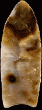
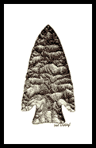
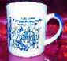

We have several New Videos!

|
 |
|
 |
|
|
It's here!! Gallery of Points
for sale
Updated 08/13/01
|
 |
We
have several New Videos!
Jim Redfearn is a master knapper who specializes in types such as the Hardin. This brand new release is directed at those who want to work with copper billets. Here Jim will explain every move in detail. Watch as he turns a chunk of chert into the point shown on the cover! 1 hr. 14 minutes, $25. To order
Just released after 2 years of refining. By D. C. Waldorf. With Illustrations By Val Waldorf. 64 pages of basic how-to information. This edition focuses not only on the use of Osage Orange and Pacific yew, it covers a whole host of whitewoods. Learn how to fast cure your bow wood and have a bow ready in a matter of weeks, not months! Also includes many bow designs including the English longbow, flat-bows, sinew backed bows, American Indian designs and more. $15. To Order.
08/13/01